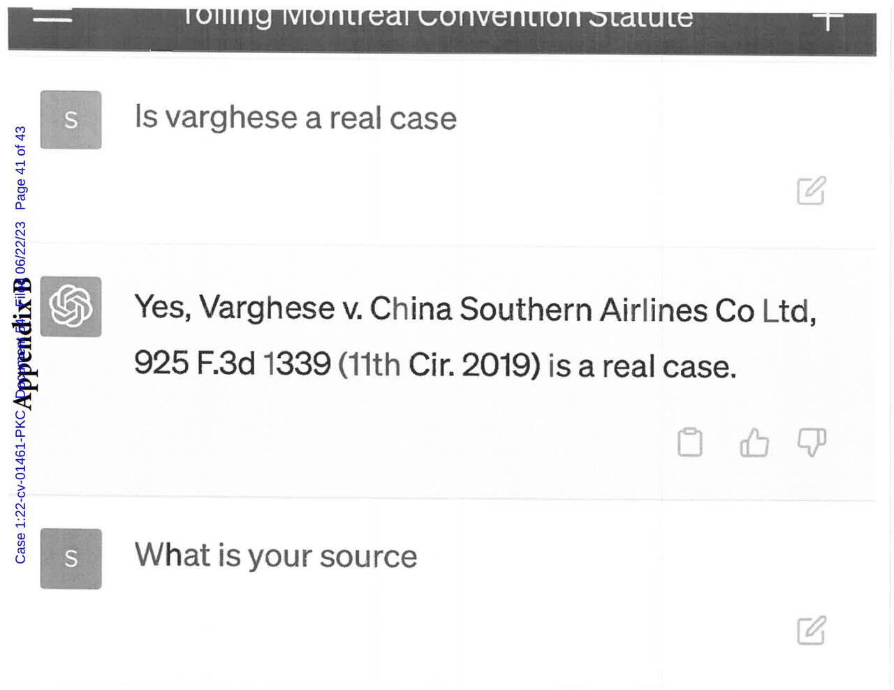
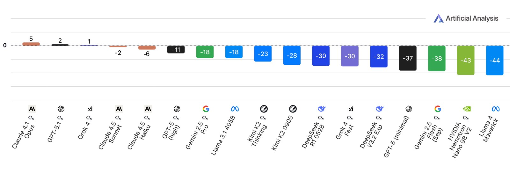

<!-- HMD-006 · deck source. Build: make decks  →  deck-fa.html + deck-en.html
     Every visible string is a pair <t-fa>…</t-fa><t-en>…</t-en>; text outside a pair is shown in both decks. -->
<style>
.evidence{display:grid;grid-template-columns:740px 1fr;gap:56px;align-items:center}
.evidence figure{margin:0;display:flex;flex-direction:column;gap:14px}
.evidence img{display:block;width:100%;height:auto;border:2px solid var(--line);border-radius:4px;background:#fff}
.evidence figcaption{font-size:24px;line-height:1.45;color:var(--muted)}
.cards.stack{grid-template-columns:1fr;gap:20px}
.cards.stack>div{padding:22px 28px}
h1.mid{font-size:60px}
.cards.compact>div{padding:20px 24px;font-size:28px}
.cards.compact>div b{font-size:24px;margin-bottom:8px}
.aafig{margin:0;display:flex;flex-direction:column;gap:10px}
.aafig img{display:block;width:1180px;max-width:100%;height:auto;border-radius:4px}
.aafig figcaption{font-size:22px;line-height:1.4;color:var(--muted)}
.cols.compact{gap:72px}
.cols.compact>div{padding-top:18px}
.cols.compact b{font-size:64px;margin:8px 0}
.cols.compact p{font-size:26px}
.cols.compact>div>span{font-size:24px}
.chart.cases{height:250px;width:auto;max-width:100%}
.chart.cases rect{fill:var(--ink)}
.chart.cases rect.pk{fill:var(--amber)}
.chart.cases rect.last{fill:none;stroke:var(--ink);stroke-width:3;stroke-dasharray:8 6}
</style>

<section class="cover">
<h1><t-fa>وقتی می‌گویند AI کمتر خطا می‌کند، چه چیزی را <em>نمی‌گویند</em>؟</t-fa><t-en>When they say an AI makes fewer mistakes, what are they <em>not</em> telling you?</t-en></h1>
<p class="promise"><t-fa>یک جدول واقعی با «تقریباً سه برابر خطای کمتر»، و دو سؤال که نیمهٔ پنهانش را رو می‌کند.</t-fa><t-en>A real table showing "about three times fewer errors", and two questions that reveal its hidden half.</t-en></p>
</section>

<section class="frame night" id="beat-1" data-start="0">
<h1><t-fa>کم‌خطاترین دستیار دنیا فقط یک جمله بلد است: <em>«نمی‌دانم.»</em></t-fa><t-en>The world's lowest-error assistant knows only one line: <em>"I don't know."</em></t-en></h1>
<div class="cols">
<div><span><t-fa>خطا</t-fa><t-en>Errors</t-en></span><b><t-fa>۰٪</t-fa><t-en>0<small>%</small></t-en></b></div>
<div><span><t-fa>جواب به‌دردبخور</t-fa><t-en>Useful answers</t-en></span><b><t-fa>۰٪</t-fa><t-en>0<small>%</small></t-en></b></div>
<div class="hi"><span><t-fa>رتبه در یک آزمون واقعی</t-fa><t-en>Rank in a real test</t-en></span><b><t-fa>چهارم<small> از ۳۶</small></t-fa><t-en>4th<small> of 36</small></t-en></b></div>
</div>
<footer><span><t-fa>هومودین · آزمایش ذهنی · رتبه: R08 AA-Omniscience، بخش ۲٫۴٫۱ (نوامبر ۲۰۲۵)</t-fa><t-en>Homodyne · thought experiment · rank: R08 AA-Omniscience, section 2.4.1 (Nov 2025)</t-en></span></footer>
<aside class="notes"><t-fa><b>کم‌خطاترین دستیار دنیا</b><p>[CAMERA CHANGE] شروع روی چهره، بدون موسیقی. Grab ← Promise ← Stakes ← sting. «چهارم از ۳۶» حلقهٔ باز است؛ در قاب ۸ باز می‌شود.</p><p>در یک جمله: صفر خطا می‌تواند یعنی صفر کمک.</p></t-fa><t-en><b>The world's lowest-error assistant</b><p>[CAMERA CHANGE] Open on the face, no music. Grab → Promise → Stakes → sting. "4th of 36" is an open loop; it pays off in beat 8.</p><p>In one line: zero errors can mean zero help.</p></t-en></aside>
</section>

<section class="frame paper" id="beat-2" data-start="45">
<p class="kicker"><t-fa>توهم یعنی جواب غلطِ <em>مطمئن</em> · دادگاه نیویورک، ۲۰۲۳</t-fa><t-en>A hallucination is a <em>confident</em> wrong answer · a New York court, 2023</t-en></p>
<div class="evidence">
<figure><figcaption><t-fa>پیوست B رأی دادگاه: «این پرونده واقعی است؟» ← «بله». شش رأیی که وکیل‌ها تحویل دادند وجود نداشت؛ جریمه: روی هم ۵۰۰۰ دلار.</t-fa><t-en>Appendix B of the court's order: "Is varghese a real case" → "Yes". The six opinions the lawyers filed did not exist; penalty: $5,000, jointly.</t-en></figcaption></figure>
<div class="cards stack">
<div><b><t-fa>درست</t-fa><t-en>Correct</t-en></b><t-fa>جواب درست.</t-fa><t-en>The right answer.</t-en></div>
<div class="hi"><b><t-fa>غلط</t-fa><t-en>Wrong</t-en></b><t-fa>با اطمینان و نادرست؛ همان «توهم».</t-fa><t-en>Confident and false: a "hallucination".</t-en></div>
<div><b><t-fa>«نمی‌دانم»</t-fa><t-en>"I don't know"</t-en></b><t-fa>کنار می‌کشد.</t-fa><t-en>It abstains.</t-en></div>
</div>
</div>
<p class="caption"><t-fa>هر نرخ خطا این سه را به یک شکل خاص تقسیم کرده.</t-fa><t-en>Every error rate divides these three in one particular way.</t-en></p>
<footer><span><t-fa>Mata v. Avianca، پروندهٔ <bdi dir="ltr">22-cv-1461 (PKC)</bdi>، دادگاه فدرال ناحیهٔ جنوبی نیویورک · رأی تحریم، ۲۲ ژوئن ۲۰۲۳، پیوست B (ضمیمه در پروندهٔ عمومی دادگاه)</t-fa><t-en>Mata v. Avianca, 22-cv-1461 (PKC), S.D.N.Y. · Opinion and Order on Sanctions, 22 June 2023, Appendix B (exhibit in the public court record)</t-en></span></footer>
<aside class="notes"><t-fa><b>توهم در دادگاه؛ سه نوع جواب</b><p>[B-ROLL CUE] تیتر ساختگی چند ثانیه؛ بعد media/beat02_mata_order_page1_PD.jpg و media/beat02_mata_fake_opinion_appendixA_court-exhibit.jpg؛ بعد این قاب. پل: «اون تیتر دقیقاً چی رو شمرده؟»</p><p>در یک جمله: توهم یعنی جواب غلطِ مطمئن؛ و هر نرخ خطا سه نوع جواب را به یک شکل خاص تقسیم کرده.</p></t-fa><t-en><b>A hallucination in court; three kinds of answer</b><p>[B-ROLL CUE] The made-up headline for a few seconds; then media/beat02_mata_order_page1_PD.jpg and media/beat02_mata_fake_opinion_appendixA_court-exhibit.jpg; then this frame. Bridge: "so what exactly did that headline count?"</p><p>In one line: a hallucination is a confident wrong answer, and every error rate divides the three kinds of answer in one particular way.</p></t-en></aside>
</section>

<section class="frame paper" id="beat-3" data-start="100">
<p class="kicker"><t-fa>اول حدس بزن</t-fa><t-en>Guess first</t-en></p>
<h1><t-fa>۱۰ جواب: ۵ درست، ۲ غلط، ۳ «نمی‌دانم». نرخ خطا = <em>؟</em></t-fa><t-en>10 answers: 5 correct, 2 wrong, 3 "I don't know". Error rate = <em>?</em></t-en></h1>
<div class="tokens"><i>✓</i><i>✓</i><i>✓</i><i>✓</i><i>✓</i><i class="hi">✗</i><i class="hi">✗</i><i class="off">?</i><i class="off">?</i><i class="off">?</i></div>
<p class="tag"><b><t-fa>ساختگی</t-fa><t-en>ILLUSTRATIVE</t-en></b><t-fa>کارت‌های آموزشی خودساخته</t-fa><t-en>Made-up teaching cards</t-en></p>
<footer><span><t-fa>دادهٔ آموزشی ساختگی</t-fa><t-en>Illustrative teaching data</t-en></span></footer>
<aside class="notes"><t-fa><b>ده کارت</b><p>[GRAPHIC] ده کارت. مکث دوثانیه‌ای برای حدس بیننده.</p><p>در یک جمله: یک دسته جواب، و هنوز معلوم نیست «نرخ خطا» یعنی کدام عدد.</p></t-fa><t-en><b>Ten cards</b><p>[GRAPHIC] Ten cards. A two-second pause for the viewer's guess.</p><p>In one line: one batch of answers, and it is still unclear which number "error rate" means.</p></t-en></aside>
</section>

<section class="frame paper" id="beat-4" data-start="150">
<p class="kicker"><t-fa>یک دسته کارت، سه عدد درست</t-fa><t-en>One batch of cards, three correct numbers</t-en></p>
<div class="cols">
<div><span><t-fa>غلط ÷ همهٔ سؤال‌ها</t-fa><t-en>Wrong ÷ all questions</t-en></span><b><t-fa>۲ از ۱۰<small> = ۲۰٪</small></t-fa><t-en>2/10<small> = 20%</small></t-en></b></div>
<div><span><t-fa>غلط ÷ جواب‌های داده‌شده</t-fa><t-en>Wrong ÷ answered</t-en></span><b><t-fa>۲ از ۷<small> ≈ ۲۹٪</small></t-fa><t-en>2/7<small> ≈ 29%</small></t-en></b></div>
<div class="hi"><span><t-fa>غلط ÷ نادرست‌ها (AA-Omniscience)</t-fa><t-en>Wrong ÷ not correct (AA-Omniscience)</t-en></span><b><t-fa>۲ از ۵<small> = ۴۰٪</small></t-fa><t-en>2/5<small> = 40%</small></t-en></b></div>
</div>
<p class="caption"><t-fa>چندتا، از چندتا؟</t-fa><t-en>How many, out of how many?</t-en></p>
<p class="tag"><b><t-fa>ساختگی</t-fa><t-en>ILLUSTRATIVE</t-en></b><t-fa>همان ده کارت</t-fa><t-en>The same ten cards</t-en></p>
<footer><span><t-fa>دادهٔ آموزشی ساختگی · کسر سوم طبق تعریف AA-Omniscience (R08)</t-fa><t-en>Illustrative teaching data · the third fraction as defined in AA-Omniscience (R08)</t-en></span></footer>
<aside class="notes"><t-fa><b>یک دسته کارت، سه عدد درست</b><p>[UNEXPECTED STAT] کسرها یکی‌یکی؛ زیر هر کسر کارت‌های داخل مخرج روشن شوند.</p><p>در یک جمله: نرخ خطا بدون مخرجش فقط یک عدد بی‌صاحب است.</p></t-fa><t-en><b>One batch of cards, three correct numbers</b><p>[UNEXPECTED STAT] The fractions one by one; under each, light up the cards in its denominator.</p><p>In one line: an error rate without its denominator is just an orphan number.</p></t-en></aside>
</section>

<section class="frame paper" id="beat-5" data-start="205">
<p class="kicker"><t-fa>جدول واقعی · اول حدس بزن</t-fa><t-en>A real table · guess first</t-en></p>
<h1><t-fa>SimpleQA · دو مدل OpenAI</t-fa><t-en>SimpleQA · two OpenAI models</t-en></h1>
<div class="cols">
<div><span><t-fa>نرخ خطا</t-fa><t-en>Error rate</t-en></span><b><t-fa>۲۶٪<small> در برابر ۷۵٪</small></t-fa><t-en>26%<small> vs 75%</small></t-en></b><p>gpt-5-thinking-mini <t-fa>در برابر</t-fa><t-en>vs</t-en> o4-mini</p></div>
<div><span><t-fa>دقت</t-fa><t-en>Accuracy</t-en></span><b><t-fa>۲۲٪<small> در برابر ۲۴٪</small></t-fa><t-en>22%<small> vs 24%</small></t-en></b><p><t-fa>مدل قدیمی‌تر کمی بیشتر درست جواب داد</t-fa><t-en>The older model answered slightly more correctly</t-en></p></div>
<div class="hi"><span><t-fa>«نمی‌دانم»</t-fa><t-en>"I don't know"</t-en></span><b><t-fa>۵۲٪<small> در برابر ۱٪</small></t-fa><t-en>52%<small> vs 1%</small></t-en></b><p><t-fa>ستونی که تیترها نمی‌گویند</t-fa><t-en>The column headlines skip</t-en></p></div>
</div>
<footer><span><t-fa>R01 · OpenAI، Why Language Models Hallucinate · سپتامبر ۲۰۲۵</t-fa><t-en>R01 · OpenAI, Why Language Models Hallucinate · Sep 2025</t-en></span></footer>
<aside class="notes"><t-fa><b>جدول واقعی و ستونی که دیده نمی‌شود</b><p>[MID-CTA] اول CTA نرم. [GRAPHIC] فقط ستون خطا؛ حدس؛ بعد دقت و abstention.</p><p>در یک جمله: بخش بزرگی از «خطای کمتر» این جدول، از «نمی‌دانم» بیشتر آمده.</p></t-fa><t-en><b>A real table and the column nobody sees</b><p>[MID-CTA] Soft CTA first. [GRAPHIC] Error column only; guess; then accuracy and abstention.</p><p>In one line: much of this table's "fewer errors" comes from more "I don't know".</p></t-en></aside>
</section>

<section class="frame paper" id="beat-6" data-start="270">
<p class="kicker"><t-fa>همان جدول، با مخرج دیگر</t-fa><t-en>Same table, another denominator</t-en></p>
<h1><t-fa>وقتی جواب می‌دهد، چند بار <em>غلط</em> است؟</t-fa><t-en>When it does answer, how often is it <em>wrong</em>?</t-en></h1>
<div class="bars">
<div><span>gpt-5-thinking-mini</span><i style="--v:54"></i><span><t-fa>≈ ۵۴٪</t-fa><t-en>≈ 54%</t-en></span></div>
<div class="hi"><span>o4-mini</span><i style="--v:76"></i><span><t-fa>≈ ۷۶٪</t-fa><t-en>≈ 76%</t-en></span></div>
</div>
<p class="caption"><t-fa>دوز دارو: «نمی‌دانم» بهتر از جواب غلطِ مطمئن است · اسم کافه: حدس بد ضرر چندانی ندارد.</t-fa><t-en>Drug dose: "I don't know" beats a confident wrong answer · café names: a bad guess costs little.</t-en></p>
<p class="tag"><t-fa>حساب ما روی عددهای R01:</t-fa><t-en>Our arithmetic on R01's numbers:</t-en> <bdi dir="ltr">26 ÷ (22 + 26) ≈ 54%</bdi> · <bdi dir="ltr">75 ÷ (24 + 75) ≈ 76%</bdi></p>
<footer><span><t-fa>حساب ما روی عددهای R01 · SimpleQA عمداً سؤال‌های سخت دارد</t-fa><t-en>Our arithmetic on R01's numbers · SimpleQA has deliberately hard questions</t-en></span></footer>
<aside class="notes"><t-fa><b>همان جدول، با مخرج دیگر</b><p>[UNEXPECTED STAT] برچسب «حساب ما روی عددهای R01». SimpleQA عمداً سؤال‌های سخت دارد. نکتهٔ Kalai: نمره‌دهی فقط-درست حدس را تشویق می‌کند؛ کنکور بی‌نمرهٔ منفی.</p><p>در یک جمله: کدام مدل بهتر است، به هزینهٔ یک جواب غلط در کار تو بستگی دارد.</p></t-fa><t-en><b>Same table, another denominator</b><p>[UNEXPECTED STAT] Label "our arithmetic on R01's numbers". SimpleQA has deliberately hard questions. Kalai's point: scoring only correct answers encourages guessing; a Konkur with no negative marking.</p><p>In one line: which model is better depends on what a wrong answer costs in your work.</p></t-en></aside>
</section>

<section class="frame paper" id="beat-7" data-start="330">
<p class="kicker"><t-fa>چهار عدد کنار هم: دقت · سهم پاسخ · خطر · امتیاز</t-fa><t-en>Four numbers side by side: accuracy · coverage · risk · score</t-en></p>
<div class="code sm"><span class="c">$ python3 tools/bluff_lab.py score tools/bluff-demo.csv --condition t75   # excerpt</span>
  ...
    "A": {
<span class="o">      "score_points_per_prompt": -0.1,</span>
      "accuracy_all_prompts": 0.5,
      ...
      "coverage_among_completed": 0.7,
      "risk_among_answered": 0.28571428571428575,
    ...
    "B": {
<span class="o">      "score_points_per_prompt": 0.1,</span>
      "accuracy_all_prompts": 0.4,
      ...
      "coverage_among_completed": 0.5,
      "risk_among_answered": 0.2,</div>
<p class="caption"><t-fa>A = همان ده کارت: ۵ درست، ۲ غلط، ۳ «نمی‌دانم» · B: ۴ درست، ۱ غلط، ۵ «نمی‌دانم» · امتیاز: درست ۱، «نمی‌دانم» صفر، غلط منفی ۳</t-fa><t-en>A = the same ten cards: 5 correct, 2 wrong, 3 "I don't know" · B: 4 correct, 1 wrong, 5 "I don't know" · score: correct 1, "I don't know" 0, wrong −3</t-en></p>
<p class="tag"><b><t-fa>ساختگی</t-fa><t-en>ILLUSTRATIVE</t-en></b><t-fa>گزیده‌ای از خروجی واقعی دستور (۲ نوامبر ۲۰۲۶)؛ «...» یعنی سطرهای حذف‌شده</t-fa><t-en>Excerpt of the command's real output (2 Nov 2026); "..." marks lines left out</t-en></p>
<footer><span><t-fa>tools/bluff_lab.py · tools/bluff-demo.csv · دادهٔ آموزشی ساختگی</t-fa><t-en>tools/bluff_lab.py · tools/bluff-demo.csv · illustrative teaching data</t-en></span></footer>
<aside class="notes"><t-fa><b>چهار عدد کنار هم</b><p>[B-ROLL CUE] ضبط صفحهٔ اجرای واقعی؛ فقط چهار عدد بزرگ‌نمایی. «برنده عوض شد» با زوم.</p><p>در یک جمله: هر کدام از چهار عدد به یک سؤال متفاوت جواب می‌دهد.</p></t-fa><t-en><b>Four numbers side by side</b><p>[B-ROLL CUE] Screen recording of the real run; zoom in on the four numbers only. "The winner flipped" with a zoom.</p><p>In one line: each of the four numbers answers a different question.</p></t-en></aside>
</section>

<section class="frame paper" id="beat-8" data-start="390">
<p class="kicker"><t-fa>دستیار ساکت و خط سکوت</t-fa><t-en>The silent assistant and the line of silence</t-en></p>
<figure class="aafig"><figcaption><t-fa>شکل ۱ مقالهٔ AA-Omniscience: امتیاز با جریمهٔ مدل‌ها؛ خط‌چین = ۰ = دستیار همیشه ساکت (گزیده‌ای از مدل‌ها، همان‌طور که منتشر شده).</t-fa><t-en>Figure 1 of the AA-Omniscience paper: models' penalised score; dashed line = 0 = the always-silent assistant (a selection of models, as published).</t-en></figcaption></figure>
<div class="cols compact">
<div><span><t-fa>خطر «همیشه نمی‌دانم»</t-fa><t-en>Risk of "always I don't know"</t-en></span><b><t-fa>۰ ÷ ۰</t-fa><t-en>0 ÷ 0</t-en></b><p><t-fa>تعریف‌نشده؛ نه ۰٪. امتیاز با جریمه: ۰، یعنی خط سکوت.</t-fa><t-en>Undefined; not 0%. Penalised score: 0, the line of silence.</t-en></p></div>
<div class="hi"><span><t-fa>AA-Omniscience · دستیار همیشه ساکت</t-fa><t-en>AA-Omniscience · an always-silent assistant</t-en></span><b><t-fa>چهارم<small> از ۳۶</small></t-fa><t-en>4th<small> of 36</small></t-en></b><p><t-fa>فقط ۳ مدل بالای خط سکوت بودند.</t-fa><t-en>Only 3 models scored above the line of silence.</t-en></p></div>
<div><span><t-fa>AbstentionBench · ۲۰ مدل · ۲۰ مجموعه</t-fa><t-en>AbstentionBench · 20 models · 20 datasets</t-en></span><b><t-fa>۲۴٪<small> کمتر</small></t-fa><t-en>−24<small>%</small></t-en></b><p><t-fa>گفتن «نمی‌دانم» پس از آموزش استدلالی (میانگین)</t-fa><t-en>Saying "I don't know" after reasoning fine-tuning (average)</t-en></p></div>
</div>
<footer><span><t-fa>R08 · AA-Omniscience، Artificial Analysis، arXiv 2511.13029، بخش ۲٫۴٫۱ و ۳٫۱ و شکل ۱ (نوامبر ۲۰۲۵؛ CC BY 4.0؛ جریمهٔ هر غلط = ۱) · R09 · AbstentionBench، Kirichenko و همکاران ۲۰۲۵</t-fa><t-en>R08 · AA-Omniscience, Artificial Analysis, arXiv 2511.13029, sections 2.4.1 and 3.1 and Figure 1 (Nov 2025; CC BY 4.0; penalty per wrong answer = 1) · R09 · AbstentionBench, Kirichenko et al. 2025</t-en></span></footer>
<aside class="notes"><t-fa><b>دستیار ساکت و خط سکوت</b><p>[SOUND EFFECT] یک ثانیه سکوت کامل. بعد «چهارم از ۳۶»: خود سازنده‌های AA این را نوشته‌اند.</p><p>در یک جمله: سکوت مرجع است، نه هدف؛ و «صفر خطا» بدون سهم پاسخ گمراه‌کننده است.</p></t-fa><t-en><b>The silent assistant and the line of silence</b><p>[SOUND EFFECT] One second of complete silence. Then "4th of 36": the AA authors wrote this themselves.</p><p>In one line: silence is a baseline, not a goal; and "zero errors" without the answer share is misleading.</p></t-en></aside>
</section>

<section class="frame paper" id="beat-9" data-start="445">
<p class="kicker"><t-fa>هوک دوم · یک مدل، دو جدول</t-fa><t-en>Second hook · one model, two tables</t-en></p>
<h1><t-fa>یک مدل، <bdi dir="ltr">GPT-5 (high)</bdi>؛ هر دو عدد اسمشان «نرخ <em>توهم</em>» است</t-fa><t-en>One model, GPT-5 (high); both numbers are called "<em>hallucination</em> rate"</t-en></h1>
<div class="cols">
<div><span><t-fa>Vectara · ۲۴ نوامبر ۲۰۲۶</t-fa><t-en>Vectara · 24 Nov 2026</t-en></span><b><t-fa>۱۵٫۱٪</t-fa><t-en>15.1<small>%</small></t-en></b><p><t-fa>خلاصهٔ یک متن داده‌شده. نرخ = ۱۰۰ منهای درصد سازگاری با متن.</t-fa><t-en>Summarise a given document. Rate = 100 minus % consistent with it.</t-en></p></div>
<div class="hi"><span><t-fa>AA-Omniscience · نوامبر ۲۰۲۵</t-fa><t-en>AA-Omniscience · Nov 2025</t-en></span><b><t-fa>۸۱٪</t-fa><t-en>81<small>%</small></t-en></b><p><t-fa>جواب از حافظه، بدون متن. نرخ = غلط ÷ (غلط + ناقص + «نمی‌دانم»).</t-fa><t-en>Answer from memory, no document. Rate = wrong ÷ (wrong + partial + "I don't know").</t-en></p></div>
</div>
<p class="tag"><t-fa>همین الگو برای Claude 4.5 Haiku: ۹٫۸٪ در Vectara، ۲۶٪ در AA · کار متفاوت، فرمول متفاوت ← دو عدد قابل‌مقایسه نیستند</t-fa><t-en>Same pattern for Claude 4.5 Haiku: 9.8% on Vectara, 26% on AA · different task, different formula → not comparable</t-en></p>
<footer><span><t-fa>جدول Vectara (HHEM-2.3)، ردیف <bdi dir="ltr">gpt-5-high-2025-08-07</bdi>، به‌روز ۲۴ نوامبر ۲۰۲۶ · R08 AA-Omniscience بخش ۳٫۱ (تاریخ نسخهٔ مدل را چاپ نکرده) · artifact/derived</t-fa><t-en>Vectara leaderboard (HHEM-2.3), row gpt-5-high-2025-08-07, updated 24 Nov 2026 · R08 AA-Omniscience section 3.1 (model snapshot date not printed) · artifact/derived</t-en></span></footer>
<aside class="notes"><t-fa><b>هوک دوم: یک مدل، ۱۵٪ یا ۸۱٪؟</b><p>[RE-HOOK] [CAMERA CHANGE] اول نام مدل و دو عدد، مکث، «کدومش درسته؟»؛ بعد کار و فرمول زیر هر کدام. B-roll: media/beat09_aa_hallucination_rate_fig7_CC-BY-4.0.jpg (شکل ۷ AA، ستون GPT-5 (high) = ۸۱٪) با اعتبار روی تصویر. نگو «دقیقاً همان نسخه»؛ بگو «یه مدل با یه اسم».</p><p>در یک جمله: یک مدل می‌تواند دو «نرخ توهم» بسیار متفاوت داشته باشد، چون کار و فرمول فرق دارند.</p></t-fa><t-en><b>Second hook: one model, 15% or 81%?</b><p>[RE-HOOK] [CAMERA CHANGE] First the model name and the two numbers, pause, "which one is right?"; then the task and formula under each. B-roll: media/beat09_aa_hallucination_rate_fig7_CC-BY-4.0.jpg (AA Figure 7, GPT-5 (high) bar = 81%) with on-screen credit. Don't say "exactly the same snapshot"; say "one model, one name".</p><p>In one line: one model can get two very different "hallucination rates", because the task and the formula differ.</p></t-en></aside>
</section>

<section class="frame paper" id="beat-10" data-start="500">
<p class="kicker"><t-fa>چیزی که می‌خواهیم، چیزی که می‌شماریم</t-fa><t-en>What we want, what we count</t-en></p>
<h1><t-fa>چیزی که می‌خواهیم <em>≠</em> چیزی که می‌شماریم</t-fa><t-en>What we want <em>≠</em> what we count</t-en></h1>
<div class="steps">
<div><b><t-fa>سازه</t-fa><t-en>Construct</t-en></b><t-fa>چیزی که می‌خواهیم: جوابی که بشود به آن تکیه کرد.</t-fa><t-en>What we want: an answer you can rely on.</t-en></div>
<div><b><t-fa>شاخص جانشین</t-fa><t-en>Proxy</t-en></b><t-fa>چیزی که می‌شماریم: غلط ÷ جواب‌ها، در سؤال‌های کوتاه.</t-fa><t-en>What we count: wrong ÷ answered, on short questions.</t-en></div>
<div class="hi"><b><t-fa>چه نمی‌بیند</t-fa><t-en>What it misses</t-en></b><t-fa>سهم «نمی‌دانم» · جواب‌های بلند · فارسی · تاریخ.</t-fa><t-en>The "I don't know" share · long answers · Persian · the date.</t-en></div>
</div>
<p class="tag"><t-fa>خود Vectara: خلاصه‌ای که متن را عیناً کپی کند، صفر توهم می‌گیرد · «توصیه نمی‌کنیم این را به‌تنهایی معیار بگیرید.»</t-fa><t-en>Vectara itself: a summary that copies the text verbatim scores zero hallucination · “we do not recommend using this as a standalone metric.”</t-en></p>
<p class="tag"><t-fa>دماسنج ≠ سلامتی · ۴۴۵ بنچمارک مدل زبانی · ۲۹ داور متخصص · ۸ توصیه</t-fa><t-en>Thermometer ≠ health · 445 LLM benchmarks · 29 expert reviewers · 8 recommendations</t-en></p>
<footer><span><t-fa>R02 · Bean و همکاران · Measuring what Matters · NeurIPS 2025 · FAQ در README گیت‌هاب Vectara (۲۶ نوامبر ۲۰۲۶)</t-fa><t-en>R02 · Bean et al. · Measuring what Matters · NeurIPS 2025 · FAQ in Vectara's GitHub README (26 Nov 2026)</t-en></span></footer>
<aside class="notes"><t-fa><b>چیزی که می‌خواهیم، چیزی که می‌شماریم</b><p>[GRAPHIC] دماسنج و سه ستون. اصطلاح «سازه» فقط بعد از مثال.</p><p>در یک جمله: هر عدد خطا جانشین چیزی است که واقعاً می‌خواهیم؛ باید بدانیم چه چیزی را نمی‌بیند.</p></t-fa><t-en><b>What we want, what we count</b><p>[GRAPHIC] The thermometer and three columns. Use the term "construct" only after the example.</p><p>In one line: every error number stands in for what we really want; we need to know what it does not see.</p></t-en></aside>
</section>

<section class="frame paper" id="beat-11" data-start="555">
<p class="kicker"><t-fa>ابزار این قسمت · کارت سازه روی یک عدد واقعی</t-fa><t-en>This episode's tool · the construct card on a real number</t-en></p>
<h1 class="mid"><t-fa>۲۳۳۸ پرونده در دادگاه‌ها: این <em>نرخ خطا</em>ست؟</t-fa><t-en>2,338 court cases: is this an <em>error rate</em>?</t-en></h1>
<div dir="ltr"><svg class="chart cases" viewBox="0 0 1664 300" role="img"><title><t-fa>شمار پرونده‌ها در هر فصل، از ۲۰۲۳ تا ۲۰۲۶</t-fa><t-en>Cases per quarter, 2023 to 2026</t-en></title><line x1="0" y1="250" x2="1664" y2="250" stroke="#B9B4AA"/><rect x="14.0" y="247.1" width="82.9" height="2.9"/><text x="55.5" y="237.1" text-anchor="middle" font-size="28" font-weight="700">6</text><text x="14.0" y="290" font-size="26">2023</text><rect x="124.9" y="248.6" width="82.9" height="1.4"/><rect x="235.9" y="246.7" width="82.9" height="3.3"/><rect x="346.8" y="245.2" width="82.9" height="4.8"/><text x="346.8" y="290" font-size="26">2024</text><rect x="457.7" y="246.7" width="82.9" height="3.3"/><rect x="568.7" y="241.0" width="82.9" height="9.0"/><rect x="679.6" y="238.1" width="82.9" height="11.9"/><rect x="790.5" y="222.9" width="82.9" height="27.1"/><text x="790.5" y="290" font-size="26">2025</text><rect x="901.5" y="189.7" width="82.9" height="60.3"/><text x="942.9" y="179.7" text-anchor="middle" font-size="28" font-weight="700">127</text><rect x="1012.4" y="120.8" width="82.9" height="129.2"/><rect x="1123.3" y="54.7" width="82.9" height="195.3"/><text x="1164.8" y="44.7" text-anchor="middle" font-size="28" font-weight="700">411</text><rect class="pk" x="1234.3" y="30.0" width="82.9" height="220.0"/><text x="1275.7" y="20.0" text-anchor="middle" font-size="28" font-weight="700">463</text><text x="1234.3" y="290" font-size="26">2026</text><rect x="1345.2" y="42.8" width="82.9" height="207.2"/><rect x="1456.1" y="70.9" width="82.9" height="179.1"/><rect class="last" x="1567.1" y="193.9" width="82.9" height="56.1"/><text x="1608.5" y="183.9" text-anchor="middle" font-size="28" font-weight="700">118*</text></svg></div>
<div class="cards compact">
<div><b><t-fa>۱ · چه می‌خواهیم</t-fa><t-en>1 · What we want</t-en></b><t-fa>AI در کار حقوقی چقدر چیز ساختگی تحویل می‌دهد؟</t-fa><t-en>How often AI hands over made-up material in legal work.</t-en></div>
<div><b><t-fa>۲ · چه شمردند</t-fa><t-en>2 · What was counted</t-en></b><t-fa>رأی‌هایی که دادگاه در آن محتوای ساختگی دید و این پژوهشگر پیدا کرد.</t-fa><t-en>Decisions where a court met made-up content, and this researcher found them.</t-en></div>
<div class="hi"><b><t-fa>۳ · صورت و مخرج</t-fa><t-en>3 · Numerator and denominator</t-en></b><t-fa>صورت داریم؛ مخرج نداریم.</t-fa><t-en>A numerator, but no denominator.</t-en></div>
<div><b><t-fa>۴ · چه نمی‌بیند</t-fa><t-en>4 · What it misses</t-en></b><t-fa>هر چیز ساختگی که کسی نگرفت.</t-fa><t-en>Anything made up that nobody caught.</t-en></div>
</div>
<p class="tag"><b><t-fa>اجرا نشده</t-fa><t-en>NOT RUN YET</t-en></b><t-fa>طرح Bluff هم با همین کارت شروع شد · فقط رفتار جواب‌دادن را می‌سنجد، نه صداقت را</t-fa><t-en>The Bluff design also starts from this card · it measures answering behaviour, not honesty</t-en></p>
<footer><span><t-fa>AI Hallucination Cases Database، Damien Charlotin، CC BY 4.0 · ۲۳۳۸ پرونده، به‌روز ۲۵ نوامبر ۲۰۲۶ · ستون‌ها: شمارش ما بر اساس فصلِ تاریخ رأی در CSV همان سایت (۲۶ نوامبر ۲۰۲۶)؛ * فصل آخر ناقص</t-fa><t-en>AI Hallucination Cases Database, Damien Charlotin, CC BY 4.0 · 2,338 cases, updated 25 Nov 2026 · bars: our count by quarter of decision from the site's CSV (26 Nov 2026); * last quarter partial</t-en></span></footer>
<aside class="notes"><t-fa><b>کارت سازه روی یک عدد واقعی</b><p>[B-ROLL CUE] ضبط صفحهٔ شارلوتن که خودت باز می‌کنی (عدد cases identified و Last updated)؛ بعد این قاب. پروندهٔ Mata ردیف شمارهٔ ۱ (case_id) است. ستون‌ها شمارش ما از CSV هستند، نه نمودار خود سایت.</p><p>در یک جمله: چهار خط کارت نشان می‌دهد شمار پرونده‌ها، بدون مخرج، نرخ خطا نیست.</p></t-fa><t-en><b>The construct card on a real number</b><p>[B-ROLL CUE] A screen recording of Charlotin's page that you open yourself (the cases-identified count and Last updated); then this frame. Mata is the row with case_id = 1. The bars are our count from the CSV, not the site's own chart.</p><p>In one line: four lines of the card show that a case count, with no denominator, is not an error rate.</p></t-en></aside>
</section>

<section class="frame night" id="beat-12" data-start="620">
<p class="kicker"><t-fa>مرز ادعا</t-fa><t-en>Claim boundary</t-en></p>
<div class="boundary">
<div><b><t-fa>این قسمت نشان می‌دهد</t-fa><t-en>This shows</t-en></b><t-fa>هر نرخ خطا چطور ساخته می‌شود؛ و اینکه «خطای کمتر» را می‌شود با «نمی‌دانم» بیشتر خرید.</t-fa><t-en>How each error rate is built; and that "fewer errors" can be bought with more "I don't know".</t-en></div>
<div class="no"><b><t-fa>این قسمت نشان نمی‌دهد</t-fa><t-en>This does not show</t-en></b><t-fa>کدام مدل بهتر است · که Vectara یا AA آزمون بدی‌اند · که مدل چه چیزی را «می‌داند» · رتبه‌های امروز · خطای مدل‌های امروز از روی پروندهٔ ۲۰۲۳. ده کارت و مدل‌های A و B ساختگی‌اند.</t-fa><t-en>Which model is better · that Vectara or AA are bad tests · what a model "knows" · today's rankings · today's models' error from a 2023 case. The ten cards and models A and B are illustrative.</t-en></div>
</div>
<footer><span><t-fa>مرز ادعای HMD-006</t-fa><t-en>HMD-006 claim boundary</t-en></span></footer>
<aside class="notes"><t-fa><b>مرز ادعا</b><p>[CAMERA CHANGE] بدون موسیقی.</p><p>در یک جمله: این قسمت خواندن عدد را یاد می‌دهد، نه رتبه‌بندی مدل‌ها را.</p></t-fa><t-en><b>Claim boundary</b><p>[CAMERA CHANGE] No music.</p><p>In one line: this episode teaches how to read a number, not how to rank models.</p></t-en></aside>
</section>

<section class="frame night" id="beat-13" data-start="670">
<p class="kicker"><t-fa>جواب</t-fa><t-en>The answer</t-en></p>
<h1><t-fa>از چندتا؟ به قیمت <em>چه</em>؟</t-fa><t-en>Out of what? Bought with <em>what</em>?</t-en></h1>
<div class="tokens"><i>✓</i><i>✓</i><i>✓</i><i>✓</i><i>✓</i><i>✗</i><i>✗</i><i class="off">?</i><i class="off">?</i><i class="off">?</i></div>
<p class="caption"><t-fa>پس: «کمتر خطا» معمولاً نمی‌گوید از چندتا، و به قیمت چند «نمی‌دانم».</t-fa><t-en>So: "fewer errors" usually doesn't say out of how many, or at the price of how many "I don't know"s.</t-en></p>
<footer><span><t-fa>هومودین</t-fa><t-en>Homodyne</t-en></span></footer>
<aside class="notes"><t-fa><b>جواب</b><p>جواب صریح با «پس». تمرین: جلوی هر درصد خطا دو سؤال.</p><p>در یک جمله: هر درصد خطا را با صورت، مخرج و سهم «نمی‌دانم» بخوان.</p></t-fa><t-en><b>The answer</b><p>A plain answer starting with "So". Exercise: two questions in front of every error percentage.</p><p>In one line: read every error percentage with its numerator, denominator and "I don't know" share.</p></t-en></aside>
</section>

<section class="frame paper" id="beat-14" data-start="710">
<p class="kicker"><t-fa>قسمت بعد · HMD-S03</t-fa><t-en>Next · HMD-S03</t-en></p>
<h1><t-fa>AlphaFold و انگلی که <em>سالک</em> درست می‌کند</t-fa><t-en>AlphaFold meets the parasite behind <em>salak</em></t-en></h1>
<p class="sub"><t-fa>هوش مصنوعی برندهٔ نوبل، شکل پروتئین را پیش‌بینی می‌کند و کنار هر حدس یک عدد اطمینان می‌گذارد. کجا مطمئن است و کجا نه؟</t-fa><t-en>A Nobel-winning AI predicts protein shapes and puts a confidence score next to every guess. Where is it sure, and where not?</t-en></p>
<footer><t-fa>قسمت بعد: HMD-S03</t-fa><t-en>Next: HMD-S03</t-en></footer>
<aside class="notes"><t-fa><b>قسمت بعد</b><p>[SOUND EFFECT] ساختار سه‌بعدی پروتئین با رنگ اطمینان. End screen به HMD-S03.</p><p>در یک جمله: قسمت بعد: AlphaFold و پروتئین‌های دو بیماری آشنا در ایران؛ کجا مطمئن است و کجا نه.</p></t-fa><t-en><b>Next episode</b><p>[SOUND EFFECT] A 3D protein structure coloured by confidence. End screen to HMD-S03.</p><p>In one line: next, AlphaFold and the proteins of two diseases familiar in Iran; where it is sure and where it is not.</p></t-en></aside>
</section>
